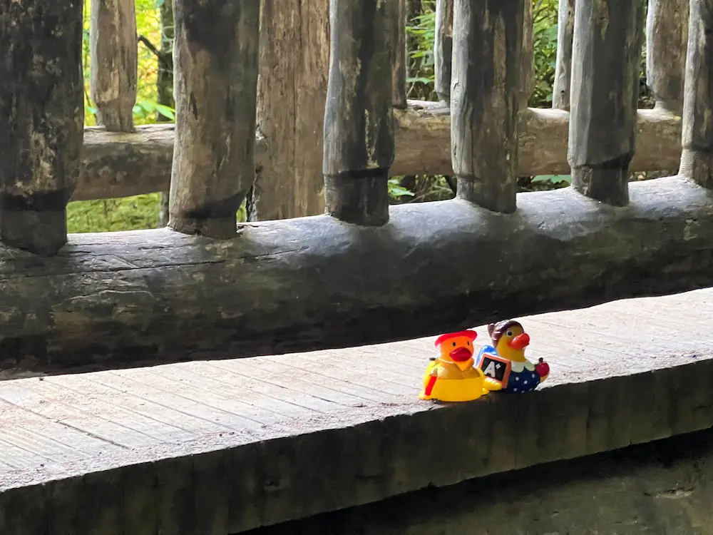

<picture> element demo
Resize the browser window to switch between the wide photo and the close-up.

<picture> with media to choose between
lookout_closeup.webp (small screens) and lookout.webp (large screens).
Resize the browser window to switch between the wide photo and the close-up.

<picture> with media to choose between
lookout_closeup.webp (small screens) and lookout.webp (large screens).